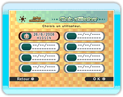
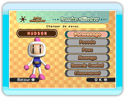

Les joueurs peuvent s'enregistrer ici pour les combats Connexion Wi-Fi Nintendo et consulter les meilleurs scores.

Sélectionne un emplacement vide pour enregistrer un
nouvel utilisateur ou modifie les paramètres d'un joueur déjà enregistré.


Lorsque tu sélectionnes Consulter/modifier dans
l'écran Utilisateurs, les menus suivants s'affichent.
|
|
|
| Personnage |
|
Cette option est disponible une fois la fonction Mii déverrouillée. Tu peux alors choisir ou non d'utiliser un Mii. |
|
|
| Pseudo |
Crée ou modifie le pseudo de l'utilisateur. |
|
| Pose |
|
Paramètre une pose que tu pourras déclencher en cours de partie en appuyant sur  . . |
|
| Message |
|
Tu peux ici paramétrer les messages. Cette option n'est disponible que pour les combats d'ami en mode Combat Connexion Wi-Fi Nintendo. Tu peux créer au total quatre messages différents, et ceux-ci peuvent s'afficher à différents moments : en cours de partie, en cas de victoire ou en cas de défaite. Appuie sur en cours de partie pour afficher un message, ou maintiens et appuie sur pour changer de message. |
|
| Records Combat |
|
Consulte tes meilleurs ou pires résultats en mode Combat ou Combat Connexion Wi-Fi Nintendo. |
|
| Classement |
|
Consulte ton classement en mode Combat Connexion Wi-Fi Nintendo. |
|